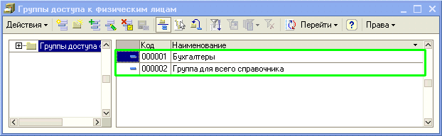
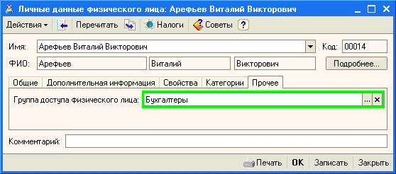

Справочник «Группы доступа физических лиц» – права доступа к физическим лицам настраиваются только для групп физических лиц.
Для настройки прав доступа к физическим лицам необходимо создать группы доступа к физическим лицам (Рисунок 1).

Рисунок 1 - Справочник «Группы доступа к физическим лицам».
Далее определим физическое лицо в необходимую группу доступа. Для этого в карточке физического лица (справочник «Физические лица») на закладке «Прочее» заполним реквизит «Группа доступа физического лица» (Рисунок 2).

Рисунок 2 - Назначение группы доступа к физическому лицу